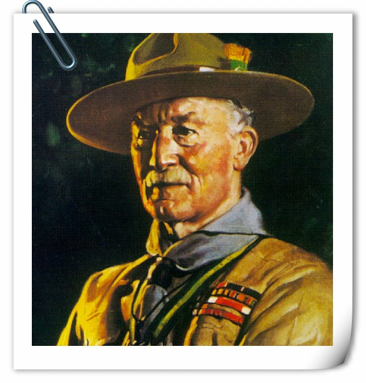

童軍運動開始於1907年，那時英國陸軍的中將羅伯特·貝登堡，創立了一個方案叫做「小隊計畫」。同年，為了測試他的方案，他集合了20位來自不同社會地位的青少年，並且在8月於英國英格蘭多塞特郡普勒港的白浪島舉行為期一週的露營。他的組織化方案，成為現在所熟之用於童軍訓練的一個重要關鍵制度-小隊制度：允許青少年可以自我組織成一個小隊並且選出小隊長。貝登堡以他早期的軍事著作為基礎，在1908年他出版的著作《童軍警探》寫下了童軍運動的原則，童軍運動採用童軍運動方法，此方法強調以實際的戶外活動作為非正式的教育訓練方式，內容包括露營、森林知識、水上活動、徒步旅行、野外旅行和運動等。
貝登堡爵士：
白浪島童軍露營紀念碑：
在《童軍警探》出版後，童軍運動開始在大英帝國各地，自發性地快速成立相關組織和小隊。第一個在當時英國以外成立的英屬殖民地童軍團，是在1908年的直布羅陀。第一個在當時海外英國自治領成立的童軍團是加拿大，其後跟進的是澳大利亞、紐西蘭和南非。智利是第一個非英國海外殖民地和自治領成立童軍團的國家。兩年後，阿根廷、丹麥、芬蘭大公國、法國、德意志帝國、希臘王國、英屬印度、英屬馬來亞、墨西哥、荷蘭、挪威、俄羅斯、瑞典和美國都先後成立童軍組織。第一次的童軍大會，在1910年的倫敦水晶宮舉行，共出席了約10,000名童軍成員和1位女童軍成員。
女童軍在童軍運動開始發展時，也納入這個運動的一部分。貝登堡和他的妹妹艾格妮絲·貝登堡，在1910年引入了女童軍，和童軍運動屬平行關係。在唯一參加水晶宮童軍大會的女童軍成員請求之下，艾格妮絲·貝登堡在1910年創立女童軍運動時就成為了第一位總領袖。1914年她創立了玫瑰童軍階段，不久後重新命名為幼女童軍階段。在貝登堡爵士的妻子，奧莉芙·貝登堡的支持下，1920年艾格妮絲·貝登堡請辭了總領袖的職務，而奧莉芙·貝登堡則在1918年就任英國女童軍總領袖，1930年任職世界女童軍總領袖。
1934年，中國童子軍總會(今中華民國童軍總會)正式成立，並於1937年加入世界組織。
直至2007年-童軍運動創立以來的100週年，童軍和女童軍共有超過3,800萬成員，涵蓋216個國家和地區。
世界童軍徽：
以上圖片如有冒犯肖像權，請盡速聯絡本站，本站將會立即修正